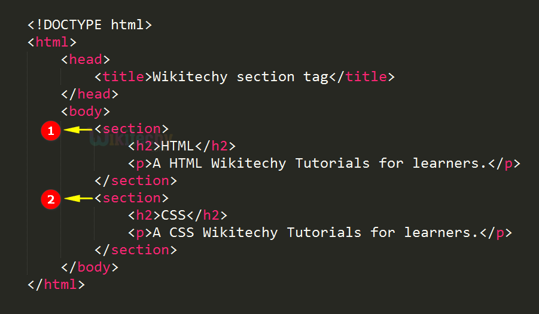

Семантичний елемент чітко описує його значення як для браузера, так і для розробника.
Приклади не семантичних елементів: < div > і < span > - нічого не говорить про його вміст.
Приклади семантичних елементів: < form >, < table > і < article >- чітко визначає його зміст.
Підтримка браузерів

Семантичні елементи HTML5 підтримуються у всіх сучасних браузерах.
Крім того, ви можете "навчити" старих браузерів, як обробляти "невідомі елементи".
Прочитайте про це в підтримці браузера HTML5.
Нові семантичні елементи в HTML5
HTML5 пропонує нові семантичні елементи для визначення різних частин веб-сторінки:
- < section >
- < article >
- < header >
- < footer >
HTML5 section елемент
Елемент section визначає розділ в документі.
Згідно з документацією в3к'с HTML5: "розділ представляє собою тематичну угруповання контенту, зазвичай з заголовком".
Домашня сторінка зазвичай може бути розділена на розділи для ознайомлення, змісту і контактної інформації.
HTML5 header елемент
Елемент header задає заголовок для документа або розділу.
Елемент header повинен використовуватися в якості контейнера для вступного змісту.
В одному документі може бути кілька елементів header. У наступному прикладі визначається заголовок для статті:

HTML5 < footer > елемент
Елемент < footer > вказує нижній колонтитул для документа або розділу.
Нижній колонтитул зазвичай містить автора документа, інформацію про авторське право, посилання на умови використання, контактні дані і т.д.
В одному документі може бути кілька елементів < footer >.